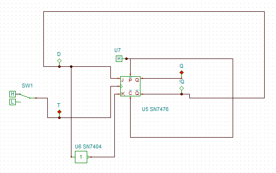

Ход выполнения работы
Построим Т-триггер на основе D-триггера и JK микросхемы."
Для этого соберем на рабочем столе следующую схему:
Теперь приведем схему в действие и проверим ее работоспособность согласно описанию, приведенному во введении:
Переключим источник в положение "Н":
Как можно наблюдать из иллюстрации, только индикатор Т поменял свое значение на положительное; согласно инструкции, вернем источник в положение "L":
Значение "Q" поменялось на противоположное.
Повторим переключение источника как сделано выше:
Значение вернулось к исходному. Схема работает корректно.